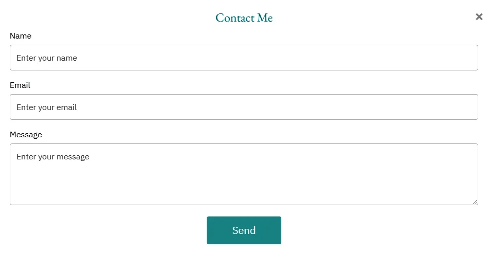

How to create a fully working contact form for your website
Learn how to create a user-friendly and fully functional contact form for your website using HTML, CSS, JavaScript, and the free formsubmit.co service. We'll guide you through the creation of a professional-looking contact form that's easy to set up and use, while also keeping your email address hidden from spammers. Our post includes code snippets, instructions, and helpful tips to help you customize the form to your liking. Download the complete code and use it on your website today!
A contact form is an essential component of any website. It needs to look professional and perform its primary function of facilitating easy and secure communication between visitors and site administrators. In this post, we'll create a fully functional contact form using HTML, CSS, JavaScript, and the free formsubmit.co service. The resulting form will be user-friendly and provide a seamless communication experience for your site visitors.
The HTML page is the easy part. We'll create a button that opens up the popup contact form, and a form tag with inputs for all the information we need from the user. Specifically, this form asks for their name, email, and message as the only inputs required. Finally, we'll create the button that sends the message. The HTML code for this page will look something like this:
<button id="open-popup" class="btn">Contact Me</button>
<div class="popup" id="popup">
<div class="popup-container">
<h2>Contact Me</h2>
<form id="contact-form" action="https://formsubmit.co/your-random-like-string" method="POST">
<!-- CAPTCHA enabled for now, disable unchecking the code below -->
<!-- <input type="hidden" name="_captcha" value="false"> -->
<input type="hidden" name="_autoresponse" value="
Thank you for your message, I will be in touch with you shortly.
">
<input type="hidden" name="_next" value="https://a2926z.github.io/chris_website/">
<label for="name">Name</label>
<input type="text" id="name" name="name" placeholder="Enter your name" required>
<label for="email">Email</label>
<input type="email" id="email" name="email" placeholder="Enter your email" required>
<label for="message">Message</label>
<textarea id="message" name="message" placeholder="Enter your message" required></textarea>
<button type="submit" class="submit-btn">Send</button>
</form>
<a class="close" href="#">×</a>
</div>
</div>
The only thing that needs to be explained here is the "your-random-like string" in the form's action. When you create the form and submit a test message, formsubmit.co will send a confirmation email to the email address you provided for receiving messages. Once you confirm the email, you will receive a second email containing a "your-random-like string," which is a string of letters and numbers. You will need to add this string to your HTML page in place of your personal email address. This will help to hide your email address from spammers who could potentially view it in the page's code, while allowing you to receive messages normally through formsubmit.co.
Once you have completed your HTML page, it's time to work on the CSS. This is where everyone can put their own personal touch or ask for help. I personally reached out to ChatGPT for help with my CSS, and I think he did an excellent job. You can find the completed code at the end of the article, so I won't go into further detail here.
JavaScript has three main tasks to perform. It can open the form as a popup, close it, and check for any errors in the email. Additionally, it can close the form if you click outside of it and prevent the page from scrolling to the top if you simply close the form, which is the default behavior. All of these actions require approximately 20 lines of code, which are presented below.
$(document).ready(function () {
// Open popup
$("#open-popup").click(function () {
$("#popup").fadeIn(300);
});
$("#popup, .close").click(function (event) {
if ($(event.target).is("#popup, .close")) { // Check if click is outside of form or on close button
event.preventDefault();
$("#popup").fadeOut(300);
}
});
// Form validation
$("#contact-form").submit(function (event) {
var email = document.getElementById("email").value;
if (!/^([a-zA-Z0-9._-]+@[a-zA-Z0-9.-]+\.[a-zA-Z]{2,4})$/.test(email)) {
alert("Please enter a valid email address.");
return false;
}
});
});Finally , setting up the form submission functionality is really simple, as we explained earlier. Instead of requiring registration, you just need to configure the action attribute of the form tag like this:
action="https://formsubmit.co/your-email-address"
After confirming your email, you'll receive a unique and bolded string to replace "your-email-address" with. This helps keep your real email address hidden from spammers. And that's it – you're almost ready to go!
Additional settings allow you to automate your responses, disable CAPTCHAs (although not recommended by formsubmit), and create a new "thank you" page where users can see that their message has been successfully sent, among other optional configurations. Personally, I found it helpful, after the message, to auto-transfer the user to my main page and set up an automated response that reads, 'Thank you for your message, I will be in touch with you shortly.' For more optional settings, you can find them all on their webpage here.
Don't forget to add your personal information to "your-email", "your-random-like string" and "your-website-url." Also, make sure to connect your CSS and JS folders to your HTML page. The form works fine with Gmail as well. The complete code for this popup contact form, including all the necessary HTML, CSS, and JavaScript files, is available for download here. Feel free to grab it and use it however you like. If you want to see the form in full action, go to the bottom of my main page and give it a try.